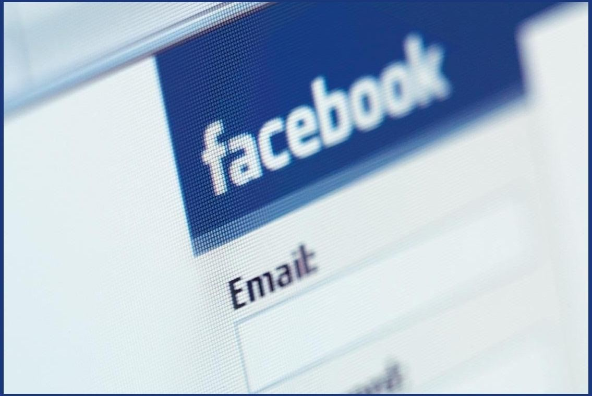
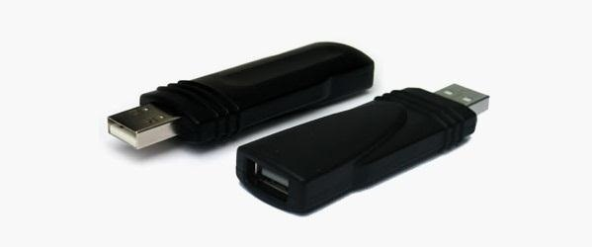

4 Ways to Crack a Facebook Password & How to Protect Yourself from Them
Despite the security concerns that have plagued Facebook for years, most people are sticking around and new members keep on joining. This has led Facebook to break records numbers with over 1.94 billion monthly active users, as of March 2017 — and around 1.28 billion daily active users.
We share our lives on Facebook. We share our birthdays and our anniversaries. We share our vacation plans and locations. We share the births of our sons and the deaths of our fathers. We share our most cherished moments and our most painful thoughts. We divulge every aspect of our lives. Clinical psychologists have written entire books detailing the surprisingly extensive impact Facebook has on our emotions and relationships.
But we sometimes forget who's watching.
We use Facebook as a tool to connect, but there are those people who use that connectivity for malicious purposes. We reveal what others can use against us. They know when we're not home and for how long we're gone. They know the answers to our security questions. People can practically steal our identities — and that's just with the visible information we purposely give away through our public Facebook profile.
The scariest part is that as we get more comfortable with advances in technology, we actually become more susceptible to hacking. As if we haven't already done enough to aid hackers in their quest for our data by sharing publicly, those in the know can get into our emails and Facebook accounts to steal every other part of our lives that we intended to keep away from prying eyes.
In fact, you don't even have to be a professional hacker to get into someone's Facebook account.
It can be as easy as running Firesheep on your computer for a few minutes. In fact, Facebook actually allows people to get into someone else's Facebook account without knowing their password. All you have to do is choose three friends to send a code to. You type in the three codes, and voilà — you're into the account. It's as easy as that.
In this article I'll show you these, and a couple other ways that hackers (and even regular folks) can hack into someone's Facebook account. But don't worry, I'll also show you how to prevent it from happening to you.
Method 1 : Reset the Password
The easiest way to "hack" into someone's Facebook is through resetting the password. This could be easier done by people who are friends with the person they're trying to hack.
-
The first step would be to get your friend's Facebook email login. If you don't already know it, try looking on their Facebook page in the Contact Info section. Still stuck? Hackers use scraping tools like TheHarvester to mine for email addresses, so check out our guide here to find a user's email that you don't already know.
-
Next, click on Forgotten your password? and type in the victim's email. Their account should come up. Click This is my account.
-
t will ask if you would like to reset the password via the victim's emails. This doesn't help, so press No longer have access to these?
-
It will now ask How can we reach you? Type in an email that you have that also isn't linked to any other Facebook account.
-
It will now ask you a question. If you're close friends with the victim, that's great. If you don't know too much about them, make an educated guess. If you figure it out, you can change the password. Now you have to wait 24 hours to login to their account.
-
If you don't figure out the question, you can click on Recover your account with help from friends. This allows you to choose between three and five friends.
-
It will send them passwords, which you may ask them for, and then type into the next page. You can either create three to five fake Facebook accounts and add your friend (especially if they just add anyone), or you can choose three to five close friends of yours that would be willing to give you the password.
How to Protect Yourself
-
Use an email address specifically for your Facebook and don't put that email address on your profile.
-
When choosing a security question and answer, make it difficult. Make it so that no one can figure it out by simply going through your Facebook. No pet names, no anniversaries — not even third grade teacher's names. It's as easy as looking through a yearbook.
-
Learn about recovering your account from friends. You can select the three friends you want the password sent to. That way you can protect yourself from a friend and other mutual friends ganging up on you to get into your account.
Method 2 : Use a Keylogger
Software Keylogger
A software keylogger is a program that can record each stroke on the keyboard that the user makes, most often without their knowledge. The software has to be downloaded manually on the victim's computer. It will automatically start capturing keystrokes as soon as the computer is turned on and remain undetected in the background. The software can be programmed to send you a summary of all the keystrokes via email.
Null Byte features an excellent guide on how to get a keylogger on a target computer to get you started. If this isn't what you're looking for, you can search for free keyloggers or try coding a basic keylogger yourself in C++.
Hardware Keylogger
These work the same way as the software keylogger, except that a USB drive with the software needs to be connected to the victim's computer. The USB drive will save a summary of the keystrokes, so it's as simple as plugging it to your own computer and extracting the data.
There are several options available for hardware keyloggers. Wired keyloggers like the Keyllama can be attached to the victim's computer to save keystrokes and works on any operating system — provided you have physical access to retrieve the device later. If you're looking to swipe the passwords remotely, you can invest in a premium Wi-Fi enabled keylogger which can email captured keystrokes or be accessed remotely over Wi-Fi.
How to Protect Yourself
-
Use a firewall. Keyloggers usually send information through the internet, so a firewall will monitor your computer's online activity and sniff out anything suspicious.
-
Install a password manager. Keyloggers can't steal what you don't type. Password mangers automatically fill out important forms without you having to type anything in.
-
Update your software. Once a company knows of any exploits in their software, they work on an update. Stay behind and you could be susceptible.
-
Change passwords. If you still don't feel protected, you can change your password bi-weekly. It may seem drastic, but it renders any information a hacker stole useless.
Method 3 : Phishing
This option is much more difficult than the rest, but it is also the most common method to hack someone's account. The most popular type of phishing involves creating a fake login page. The page can be sent via email to your victim and will look exactly like the Facebook login page. If the victim logs in, the information will be sent to you instead of to Facebook. This process is difficult because you will need to create a web hosting account and a fake login page.
The easiest way to do this would be to follow our guide on how to clone a website to make an exact copy of the facebook login page. Then you'll just need to tweak the submit form to copy / store / email the login details a victim enters. If you need help with the exact steps, there are detailed instructions available by Alex Long here on Null Byte. Users are very careful now with logging into Facebook through other links, though, and email phishing filters are getting better every day, so that only adds to this already difficult process. But, it's still possible, especially if you clone the entire Facebook website.
How to Protect Yourself
-
Don't click on links through email. If an email tells you to login to Facebook through a link, be wary. First check the URL (Here's a great guide on what to look out for). If you're still doubtful, go directly to the main website and login the way you usually do.
-
Phishing isn't only done through email. It can be any link on any website / chat room / text message / etc. Even ads that pop up can be malicious. Don't click on any sketchy looking links that ask for your information.
-
Use anti-virus & web security software, like Norton or McAfee.
Method 4 : Man in the Middle Attack
If you can get close to your target, you can trick them into connecting to a fake Wi-Fi network to steal credentials via a Man In The Middle (MITM) attack. Tools like the Wi-Fi Pumpkin make creating a fake Wi-Fi network is as easy as sticking a $16 Wireless Network Adapter on the $35 Raspberry Pi and getting close to your target. Once the victim connects to your fake network, you can inspect the traffic or route them to fake login pages. You can even set it to only replace certain pages and leave other pages alone.
How to Protect Yourself
-
Don't connect to any open (unencrypted) Wi-Fi Networks.
-
Especially don't connect to any Wi-Fi networks that are out of place. Why might you see a "Google Starbucks" when there's no Starbucks for miles? Because hackers know your phone or computer will automatically connect to it if you have used a network with the same name before.
-
If you have trouble connecting to your Wi-Fi, look at your list of nearby networks to see if there are any copies of your network name nearby.
-
If your router asks you to enter the password for a firmware update to enable the internet or shows you a page with major spelling or grammar errors, it is likely you're connected to a fake hotspot and someone nearby is trying to steal your credentials.
A Couple More Facebook Hacks
For those with a bit more technical skill, check out the Same Origin Policy Facebook hack and the somewhat easier, Facebook Password Extractor. We will continue add more Facebook hacks in the near future, so keep coming back here.
How to Protect Yourself
-
On Facebook, go to your Account Settings and check under Security. Make sure Secure Browsing is enabled. Firesheep can't sniff out cookies over encrypted connections like HTTPS, so try to steer away from HTTP.
-
Full time SSL. Use Firefox add-ons such as HTTPS-Everywhere or Force-TLS.
-
Log off a website when you're done. Firesheep can't stay logged in to your account if you log off.
-
Use only trustworthy Wi-Fi networks. A hacker can be sitting across from you at Starbucks and looking through your email without you knowing it.
-
Use a VPN. These protect against any sidejacking from the same WiFi network, no matter what website you're on as all your network traffic will be encrypted all the way to your VPN provider.
Protecting Yourself: Less Is More
Social networking websites are great ways to stay connected with old friends and meet new people. Creating an event, sending a birthday greeting and telling your parents you love them are all a couple of clicks away.
Facebook isn't something you need to steer away from, but you do need to be aware of your surroundings and make smart decisions about what you put up on your profile. The less information you give out on Facebook for everyone to see, the more difficult you make it for hackers.
If your Facebook account ever gets hacked, check out our guide on getting your hacked Facebook account back for information on restoring your account.